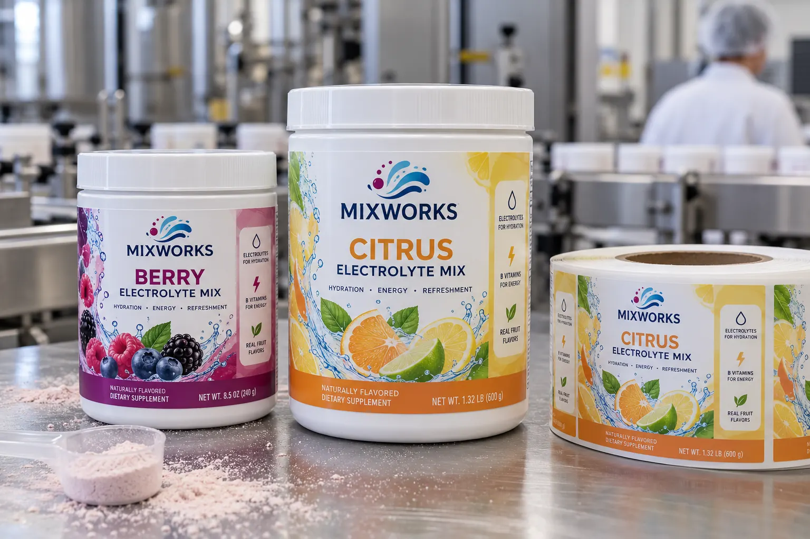

Start with the tub supplied to the packer
I do not quote a powdered drink label from a diameter on an email alone. The molded tub may be polypropylene, have a faint texture or include a recessed panel. Avery Dennison's adhesive guide notes that surface energy changes how adhesives bond and lists PP among packaging surfaces that need consideration. That is a reason to test the exact tub, not to assume all PP containers behave alike.
Powder turns a small process mistake into edge lift
Imagine a composite brand launching berry and citrus drink mixes in two tub sizes. The team wants one label design system, which is sensible. But the larger tub has a different curve and a slightly textured shoulder. I would put the label on the straight wall and trial the smaller tub first, where curvature puts more stress on label edges.
A second composite packer fills before labeling. Powder sometimes dusts the outer wall near the lid. I would record whether the label zone is clean when the applicator reaches it. Specifying a new adhesive without fixing an inconsistent dusty surface is an expensive way to ignore the line.
Trial handling, not just initial tack
Apply labels at normal speed to actual filled tubs. Inspect immediately, after case packing and after ordinary opening and closing. Check the vertical seam, edge lift and whether the flavor name and variable lot stay visible when a customer holds the tub. Confirm final ingredient, allergen and nutrition copy with the responsible market team; the photograph in this guide is fictional artwork, not a compliant label proof.
| Input | Why it matters |
|---|---|
| Tub resin and texture | Adhesive selection |
| Diameter and straight-wall height | Die size and edge stress |
| Fill/label sequence | Powder on label zone |
| Flavor count | Artwork and run planning |
Our buying view
Fix the surface before buying a premium adhesive
If dust is the real problem, a higher-cost stock may only hide it in a short sample run. I would first stabilize the application zone, then choose the least complicated construction that passes the filled-tub trial.
Send a useful sample set
- Actual tubs and lids in every size.
- Resin, texture and any coating information.
- Fill and label sequence with application speed.
- All flavor artworks, quantities and code method.
Compare HDPE and PP container labeling and multi-SKU short runs before locking the roll specification.
Frequently asked questions
Why do labels lift from a PP tub?
PP can be a low-surface-energy substrate; molded texture, curvature, dust and application pressure also matter.
Can I use the same label on two tub sizes?
The artwork can be shared, but die size and edge behavior need testing on each actual tub diameter.
Should powder be cleaned before labeling?
The label zone should be controlled and clean according to the pack-line process; do not assume adhesive will bond through powder.
Related buyer guides
Review your label specification
Send package photos, label dimensions, material details, quantity and application conditions. Include good and failed samples where possible so the discussion starts with evidence.